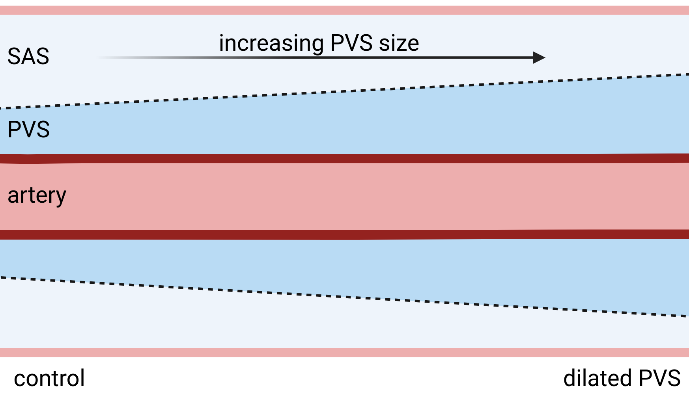

<html lang="en">
    <head>
        <meta charset="UTF-8">
        <meta name="viewport" content="width=device-width, initial-scale=1.0">
        <title>Figure 5</title>
        <style>
        @page {
            size: A4;
            margin: 1cm;
        }

        body {
            font-family: Arial, sans-serif;
        }
        h5 {
            color: black;
            text-align: center;
            font-family: Helvetica;
            font-size: 6pt;
            margin-top: 20px;
        }
        h4 {
            color: black;
            text-align: left;
            font-size: 8pt;
            font-family: Helvetica;
        }

        p {
            text-align: center;
        }
        img {
            object-fit:contain;
        }
    </style>
    </head>
</html>



<p align="right" style="font-size:x-small;position:absolute;left:-18px;top:265px;width:80px;height:15px;translate:0px 0px;rotate:-90deg;">
    high PVS flow<br>
</p>
<p style="font-size:x-small;position:absolute;left:-28px;top:355px;width:80px;height:15px;translate:0px 0px;rotate:-90deg;">high PVS flow - dilated</p>


<h2 style="position:absolute;left:11px;top:-5px;width:58px;height:21px;">A</h2>
<h2 style="position:absolute;left:214px;top:-5px;width:58px;height:21px;">B</h2>
<h2 style="position:absolute;left:670px;top:-5px;width:58px;height:21px;">D</h2>
<h2 style="position:absolute;left:11px;top:203px;width:58px;height:21px;">E</h2>
<h2 style="position:absolute;left:436px;top:202px;width:58px;height:21px;">F</h2>
<h2 style="position:absolute;left:11px;top:426px;width:58px;height:21px;">G</h2>
<h2 style="position:absolute;left:436px;top:427px;width:58px;height:21px;">H</h2>
<h5 style="position:absolute;left:86px;top:22px;width:61px;height:21px;">PVS dilation</h5>
<h5 style="position:absolute;left:277px;top:-18px;width:92px;height:21px;">max PVS velocity</h5>
<h5 style="position:absolute;left:277px;top:93px;width:92px;height:21px;">mean PVS velocity</h5>
<h5 style="position:absolute;left:426px;top:-17px;width:226px;height:21px;">vasomotion induced PVS velocity (control)</h5>
<h5 style="position:absolute;left:665px;top:-17px;width:245px;height:21px;">vasomotion induced PVS velocity (dilated)</h5>
<h2 style="position:absolute;left:436px;top:-5px;width:58px;height:21px;">C</h2>
<h5 style="position:absolute;left:554px;top:209px;width:226px;height:21px;">first-time arrival</h5>
<h5 style="position:absolute;left:553px;top:439px;width:226px;height:21px;">mean tracer concentration</h5>
